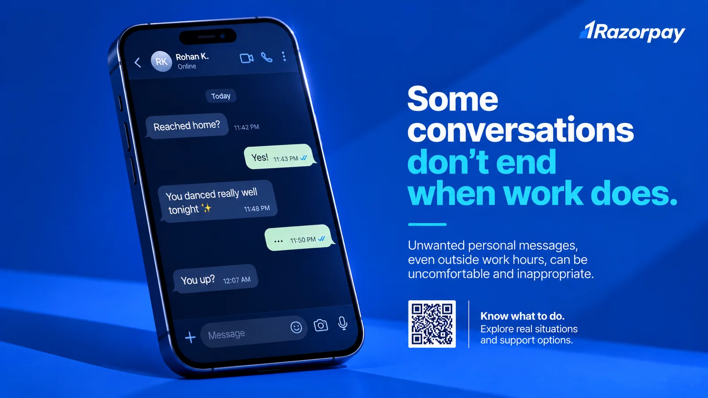
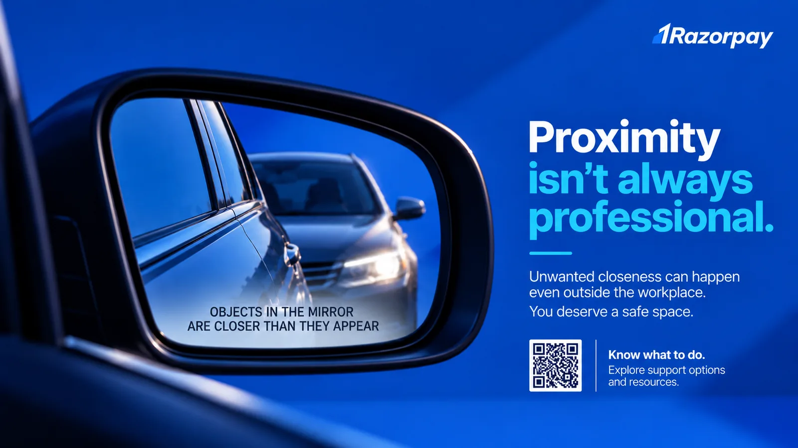
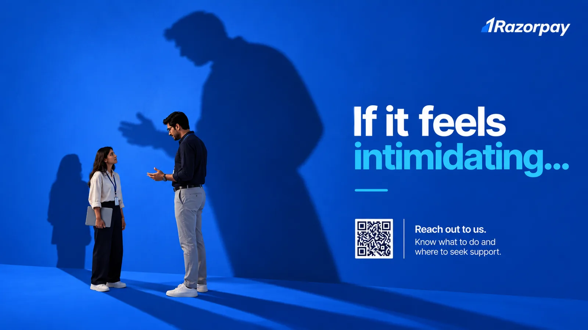
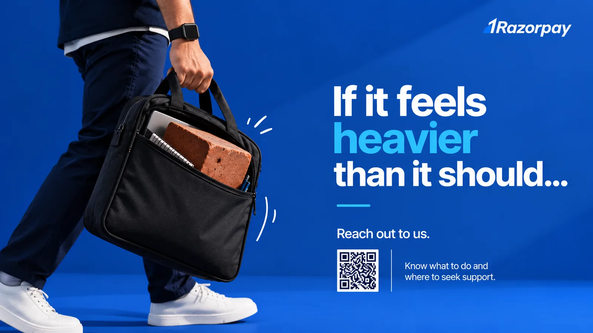

If It Feels Off.
Recognise it. Know where to start.
A campaign designed to make subtle workplace discomfort easier to recognise — and support easier to access. The creative work opens the conversation; Open Door gives employees a clear next step.
What are we saying?
You do not need to know exactly what to call an uncomfortable interaction before seeking guidance. Notice the feeling, understand your options, and reach out.
What will we cover?
Digital boundaries, proximity, power and intimidation, emotional impact, allyship, policy awareness, IC visibility and support routes.
How will it show up?
TV screens, Slack, email, washrooms, coffee/pantry spaces and a QR-led journey into Open Door.
Two ways to run the same campaign
The creative system and Resource Hub remain the same. The decision is whether we create one concentrated moment or build a year-long rhythm.
Launch
Campaign reveal + Open Door goes live. Slack, email and TV drive the first wave.
Recognise
Digital boundaries and proximity creatives across screens and physical spaces.
Understand
Power, intimidation and emotional-impact creatives. Scenario-led Slack content.
Find support
Meet your IC, HRBP and skip-level options. Open Door walkthrough.
Act
Allyship, what happens next, final QR push and support reminder.
Monthly Awareness
One high-impact creative or scenario each month: digital boundaries, proximity, power, jokes, work travel, bystander cues, repeated attention, manager dynamics and more.
Monthly Action
One action-led communication each month: meet an IC member, speak to HRBP, use Open Door AI, understand reporting, allyship, manager guidance, policy myth-busting or support routes.
| Rhythm | What employees see | Role of Open Door |
|---|---|---|
| Launch month | Campaign identity + 2 hero creatives + Resource Hub | Primary destination from day one |
| Every month | 1 awareness creative + 1 action/support comm | Always-on reference point |
| Across the year | New visual metaphors, new situations, recurring IC/HRBP visibility | Content grows with new FAQs and approved scenarios |
| Plan A | Plan B | |
|---|---|---|
| Strength | High visibility and concentrated recall | Sustained awareness and behaviour reinforcement |
| Cadence | Multiple touchpoints within 21–30 Nov | Launch in Nov, then two comms every month |
| Resource Hub | Launches on Day 1 | Launches on Day 1 and stays central year-round |
| Creative model | 4–6 hero creatives in one burst | Creative library expands throughout the year |
Creative system
Familiar moments, one strong visual idea, minimal copy. The message is recognisable as workplace safety and POSH without relying on policy-heavy language.




Open Door · POSH Resource Hub
Built on Lovable and restricted to verified Razorpay employees. The campaign creates the question; Open Door makes the next step obvious.
A safe place to start.
Verified @razorpay.com access. In production, use approved authentication rather than domain text alone.
Choose what you need right now.
Ask without hunting through a PDF.
An informational assistant grounded in approved Razorpay POSH policy, FAQs and reviewed scenarios.
AI is informational only — not an investigation or complaint channel.
Personalised people
Employee email maps securely to the right IC member, HRBP and approved skip-level support route.
Real situations
Approved scenarios help employees understand context, policy and available next steps without over-legalising the experience.
One place to return to
Policy, FAQs, IC directory, reporting journey, manager resources and all campaign creatives stay accessible year-round.
Comms plan by medium
Each medium has a different job. The campaign should not feel like one launch email repeated five times.
Physical-space poster ideas
Keep the same blue visual identity and oversized-object language, but adapt the message to the environment.
The campaign gets people thinking. Open Door helps them take the next step.
Plan A creates one concentrated moment. Plan B builds a year-long habit. In both options, the employee experience, creative identity and support destination remain consistent.